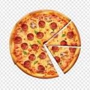

<h1>pizza</h1>

<ol>
    <li>yeast: 1 standard packet of yeast (2 and 1/4 teaspoons)</li>  
    <li>water: 1 and 1/3 cups, warmed at 100-110 *F</li>
    <li>flour: unbleached all purpose</li>
    <li>oil: couple tablespoons of extra virgin olive olive</li>
    <li>salt</li>
    <li>sugar: 1 tablespoon</li>
    <li>cornmeal</li>
</ol>

<!-- <a href="../style.css" -->